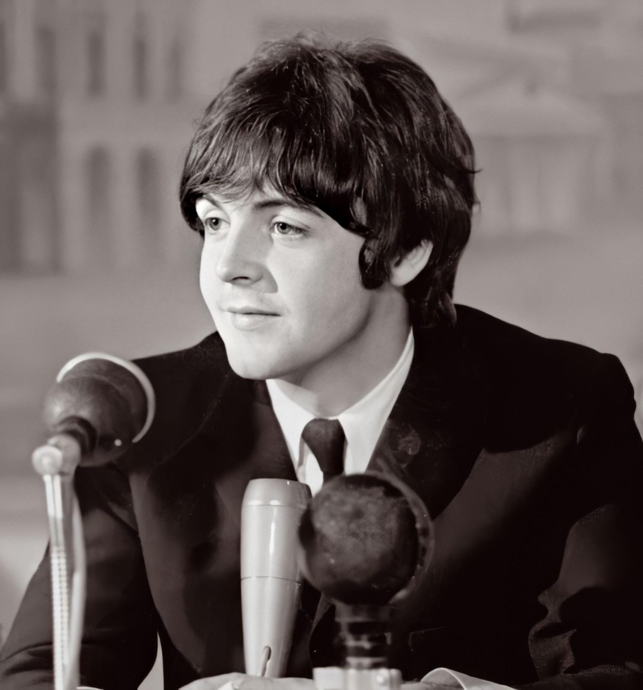
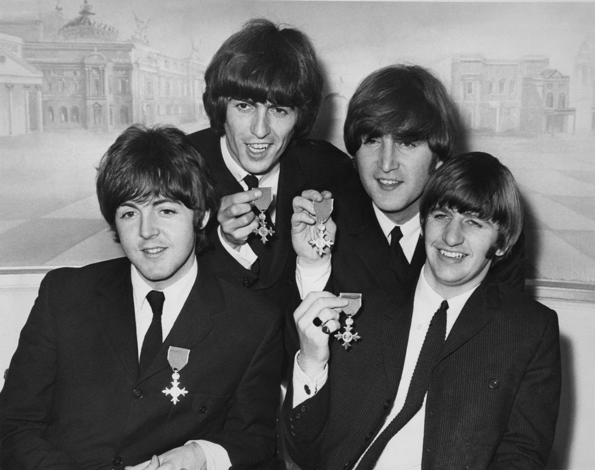
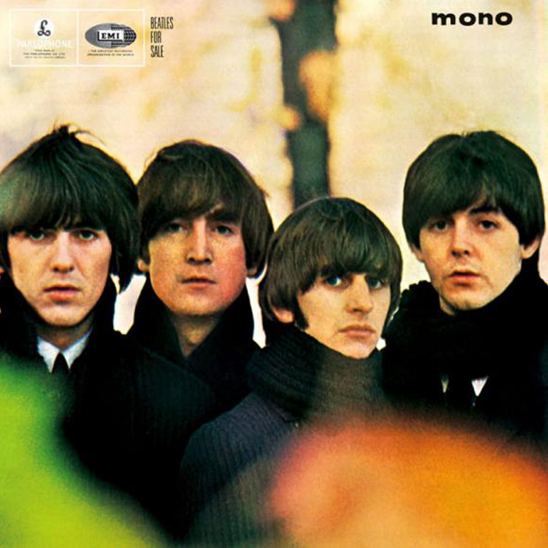

Sejarah
Sedikit yang kita tahu bahwa dunia musik akan berubah pikiran ketika seorang Paul McCartney berusia 15 tahun bertemu
John Lennon berusia 16 tahun di 1957. Lennon, di band skiffle-nya The Quarrymen, mengundang McCartney untuk bergabung
dengan grup dengan gitar ritem, dengan band kemudian mengundang George Harrison dan pemain bass asli Stuart Sutcliffe
untuk bergabung.
Setelah serangkaian konser di Liverpool, manajer pertama The Beatles, Allan Williams (pemilik asli tempat lokal The Jacaranda)
mengatur residensi di Hamburg untuk band, yang akan melihat drummer asli The Beatles, Pete Best bergabung dengan band. 1961
melihat Sutcliffe meninggalkan band - dengan McCartney menggantikannya dengan bass. Setelah kritik, Best juga akan digantikan
oleh Ringo Starr muda setahun kemudian.
Personel
John Lennon
John Winston Ono Lennon (lahir di Liverpool, Inggris, 9 Oktober 1940 – meninggal di New York City, Amerika Serikat,
8 Desember 1980 pada umur 40 tahun) paling dikenal sebagai penyanyi, pencipta lagu, instrumentalis, penulis, dan aktivis
politik yang terkenal di seluruh dunia sebagai pemimpin dari The Beatles. Lennon dan Paul McCartney membentuk partnership
pencipta lagu yang paling sukses dan berhasil hingga saat ini. Lennon dengan sinismenya dan McCartney dengan optimismenya
melengkapi satu sama lain dengan sangat baik.
Paul McCartney

Sir Paul McCartney, KBE (lahir di Liverpool, Inggris, 18 Juni 1942; umur 71 tahun) merupakan penyanyi berkebangsaan Inggris.
Ia terkenal sebagai salah satu personel The Beatles. Bersama John Lennon di dekade 1960an, ia membentuk partnership pencipta
lagu paling sukses. Ia masih aktif bermusik dan sebagai musikus hingga kini, pendapatannya adalah salah satu yang tertinggi
di Inggris. Setelah The Beatles bubar, McCartney bersama istrinya, Linda McCartney membentuk grup musik Wings yang cukup sukses
di medio tahun 1970an. Setelah Wings bubar, ia bersolo karier hingga sekarang.
George Harrison
George Harrison MBE (lahir di Wavertree, Liverpool, Inggris, 25 Februari 1943 – meninggal di Los Angeles, Kalifornia, Amerika
Serikat, 29 November2001 pada umur 58 tahun) adalah musisi, penyanyi, penulis lagu dan produser film Britania Raya.[1] Ia
paling dikenal sebagai gitaris grup musik The Beatles.
Dikenal sebagai Beatle yang Pendiam (Quiet Beatle), George Harrison merupakan seorang penulis lagu yang dibayang-bayangi oleh
dua orang musisi besar yang seringkali membuat orang tidak banyak yang memandang bakatnya di dunia musik.[2] Lagu-lagu yang
ditulis dan diciptakan oleh George Harrison seperti “Something” dan “While My Guitar Gently Weeps” dianggap sebagai beberapa
dari adikarya The Beatles.[2] Album solo perdana George Harrison yang berjudul All Things Must Pass memperlihatkan kemampuannya
yang baik dalam mengeksplorasi tema-tema spiritual dengan komposisi melodi yang bervariasi. Harrison memperkenalkan The Beatles
dan generasi yang besar pada tahun 1960-an kepada spiritualisme timur.
Ringo Starr
Richard Starkey, MBE (lahir di Liverpool, Inggris, 7 Juli 1940; umur 73 tahun), dikenal dengan nama panggungnya Ringo Starr,
adalah musikus terkenal dari Britania Raya, paling populer sebagai drummer The Beatles. Ia bergabung dengan The Beatles pada
tahun 1962.
Sebagai seorang drummer, Starr dikenal kreatif, dan kontribusinya pada band mendapat pujian dari banyak drummer profresional.
Tahun 2011, ia mendapat peringkat kelima dalam polling Rolling Stones untuk 100 drummer terbaik sepanjang masa.
Prestasi

-
The Beatles adalah grup musik terlaris sepanjang masa, yang diperkirakan oleh EMI, lebih dari satu miliar disc dan kaset
album-albumnya terjual di seluruh dunia.
-
Yang paling multi-platinum untuk penjualan album artis atau grup musik (13 di Amerika Serikat saja)
-
The Beatles telah memiliki lebih nomor satu single daripada artis lainnya atau grup musik (22 di Amerika Serikat saja).
Ironisnya, The Beatles bisa dengan mudah memiliki jumlah yang lebih banyak, karena mereka sering bersaing dengan single
mereka sendiri.. Misalnya, The Beatles ‘ “Penny Lane” dan “Strawberry Fields Forever” dirilis sebagai “double A” bersisi
tunggal, yang menyebabkan penjualan dan diputar untuk dibagi antara dua lagu bukannya dihitung secara kolektif. Meskipun
demikian, mereka mencapai nomor dua dengan single.
-
Yang paling sukses pada penjualan minggu pertama album ganda (The Beatles Anthology Volume 1), yang terjual 855.473 kopi
di Amerika Serikat dari 21 November – 28 November, 1995).
-
Dalam hal mencatat posisi, John Lennon dan McCartney adalah penulis lagu paling sukses dalam sejarah, dengan 32 single
nomor satu di AS oleh McCartney, dan 26 untuk Lennon (23 di antaranya ditulis bersama-sama). Lennon bertanggung jawab
untuk 29 nomor satu single di Inggris, dan 28 single nomor satu dari McCartney (25 di antaranya ditulis bersama-sama).
-
Selama minggu April 4, 1964, The Beatles memegang posisi top 5 di Billboard singel. Tak seorang pun pernah melakukan hal
seperti ini sebelumnya, dan diragukan bahwa kondisi akan pernah ada bagi siapa pun untuk melakukannya lagi. The songs were
“Can’t Buy Me Love”, “Twist and Shout”, “She Loves You”, “I Want to Hold Your Hand”, and “Please Please Me”. Lagu itu
“Can’t Buy Me Love”, “Twist and Shout”, “She Loves You”, “I Wanna Hold Your Hand”, dan “Please Please Me”.
-
The Beatles memegang 14 posisi di Billboard Hot 100. Sebelum The Beatles, jumlah tertinggi single bersamaan oleh satu
artis di Hot 100 adalah sembilan (oleh Elvis Presley, 19 Desember 1956).
-
The Beatles adalah satu-satunya artis untuk memiliki back-to-back-to-back nomor satu single di Billboard’s Hot 100.
Boyz II Men dan Elvis Presley telah berhasil sendiri pada tabel, tapi The Beatles adalah satu-satunya artis tiga-gambut.
-
The Beatles ‘ “Yesterday” adalah lagu yang paling sering di rekam ulang (cover) dalam sejarah, muncul dalam Guinness
Book of Records dengan lebih dari 3000 versi yang tercatat.
-
The Beatles memiliki satu penjualan tercepat sepanjang masa dengan “I Want To Hold Your Hand”. Lagu terjual 250.000
unit dalam 3 hari di AS, satu juta dalam 2 minggu. (10.000 eksemplar per jam di New York City sendiri untuk 20 hari pertama)
-
2,1 juta kopi adalah jumlah pesanan awal terbesar untuk satu lagu di Amerika Serikat untuk “Can’t Buy Me Love”
Dengan kinerja mereka di Stadion Shea di tahun 1965, The Beatles membuat rekor dunia baru untuk konser kehadiran (55.600 +) dan pendapatan.
-
The Beatles memecahkan rekor rating televisi di Amerika Serikat dengan penampilan pertama mereka di Ed Sullivan show yang disaksikan 73 juta penonton.
-
The Beatles dianugerahi urutan Anggota Kerajaan Inggris (MBE) oleh Ratu.
-
Pada tanggal 2 Juli 1966, The Beatles menjadi grup musik pertama untuk tampil di Nippon Budokan Hall di Tokyo Jepang.
-
Di Ausralia, 300.000 penggemar menyerbu Adelaide untuk menyaksikan The Beatles dalam pementasan sehari pada tahun 1964.
Tiga puluh enam tahun kemudian, mereka masih menyedot banyak penonton: di musim panas tahun 2000 kota Liverpool menampung
350.000 penggemar dari seluruh dunia yang datang untuk perayaan tahunan The Beatles, dan setiap tahun kota tersebut menerima
lebih dari 500.000 penggemar The Beatles yang ingin melihat tempat-tempat yang sering dikunjungi oleh Fab Four.
-
The Beatles memenangkan empat belas Grammy Awards dengan lebih dari tiga puluh nominasi.
-
Mereka menerima satu Academy Award dan dinominasikan untuk dua kategori lainnya.
Musik
1 / 13
Magical Mystery Tour
4 / 13

White Album
5 / 13
Sgt.Peppers Lonely Heart Club Band
11 / 13

Beatles For Sale
13 / 13
A Hard Days Nigth
❮
❯